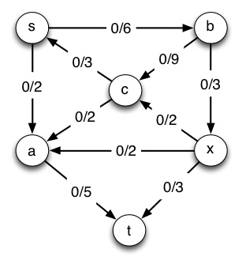
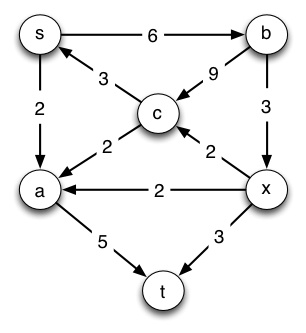
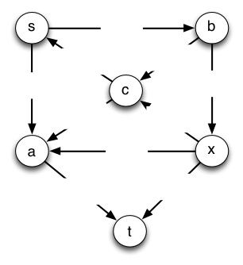
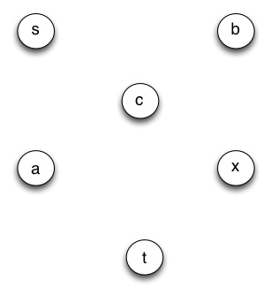
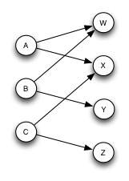

Please list the names of the other members of your peer group for this week and the number of extra credit points you think they deserve for their participation in group work on Tuesday and Thursday combined.
(a) (8 pts) Run Edmunds-Karp on the flow network shown below with **s as the source and t as the sink.** Following the template below, draw the flow graph on the left hand side of the page with flows and capacities labeled as shown, and the residual graph on the right hand side of the page with capacities shown. (The first line is already done for you up to this point.) Then on each pass:
Please use the visual templates provided to make this easier to grade (.jpg, .graffle, .vdx. and .svg versions of templates are available.)
_**_G_ (flow network)**_
_**_G__f_ (residual network)**_




... repeat as needed ...
... repeat as needed
When you can't update the graph any more (be sure you can say on an exam why you can't update it any more!), answer the following:
(b) (1 pt) Write down the value of the flow |f| that was achieved.
(c) (1 pt.) Draw a line in the final graph showing the min cut that corresponds to this max flow. (Be careful: all outgoing edges your line crosses must be filled to capacity.)

In this problem you will solve a bipartite matching problem by converting it to a flow maximization problem and then to a linear program. This shows the power of "problem reduction": converting a problem of one type into a different problem for which you have a problem solving tool.
To the right is a bipartite matching problem (page 732). Adele will dance with William and Xavier; Betty will dance with William and Yuhan, and Cindy will dance with Xavier and Zachary. We want to maximize the dancing pairs.
(a) (2 pts) Convert this problem to a maximum flow problem by adding vertices and specifying edge capacities (page 733).
(b) (4 pts) Convert the maximum flow problem to a linear program. NOTE: Do not just write down the general formulas on page 860. Write out the specific formulas for each edge and vertex, using fAW etc. Specifically, you will write:
Comment: Although linear programming has great generality, now you can see why it might be easier to just run Ford-Fulkerson. However, linear programming may be easier and perhaps even necessary when there are other constraints, such as in the problem below.
On page 861, CLRS discuss minimum-cost flow, in which different edges charge different costs per unit of flow and we wish to minimize cost. On page 862, CLRS discuss multicommodity flow, in which we want to transport multiple kinds of commodities from different sources and targets over the same network with delivery guarantees, and ask whether a flow that meets these guarantees exists. The only known algorithms for solving this problem are linear programming solutions (we can no longer handle it with a modified graph and Edmunds-Karp).
The minimum-cost multi-commodity flow problem is the combination of these problems:
Given a graph G = (V, E),
Each edge (u, v) ∈ E has capacity c(u, v) ≥ 0 and cost a(u, v) > 0.
We wish to transport k commodities K1, K2, .... Kk over the network
Each commodity Ki = (si, ti, di) must be transported from a commodity-specific start vertex si to target vertex ti, and we need a delivery guarantee that di units are delivered.
The aggregate flow fu,v on edge (u, v) is the sum of the flow for each commodity fi.
A solution is feasible if fu,v ≤ c(u, v).
We want to meet the delivery demands di and minimize the cost of the flow, which is the sum of the cost time aggregate flow for each edge:
Σu,v∈V a(u, v) fu,v
How can the solutions in CLRS be combined to solve the minimum-cost multi-commodity flow problem? (It's easier than this looks at first.)
Dan Suthers Last modified: Sat Apr 19 02:16:44 HST 2014